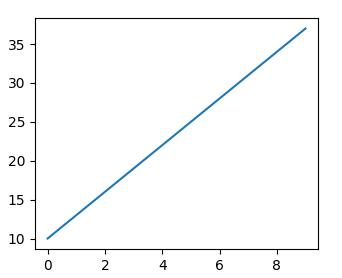
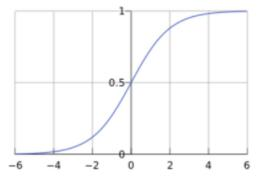
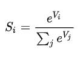
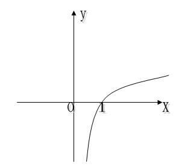

深度神经网络（DNN）基础知识
这里介绍使用 MaixPy AI 相关功能需要了解的知识，让你能够理解后面的内容， 不在本篇中深入介绍。
如何解决一个问题--引出机器解决问题
一个问题， 通常分为 输入 和 输出（结果）
比如：
坐标系中的一条直线如下， 上面的数据点值是已知的:

现在提问，假如数据点规律不变， 输入一个 x 坐标 20, y 的值是多少？
按照大家的知识，都知道这是一个一元一次方程(y = kx + b能解决的， 带入两个点的值，算出方程为y = 3x + 10, 那么当 x=20, y 的值为70， 于是输入是20, 输出是70。
这里就是 输入(20) + 算法（一元一次方程） = 输出（70）， 这就是我们在解决一个问题时的基本方法， 所以关键就是找到这个符合这条线段上数据点规律的一个算法。
人类很强大，会从这些数据中归纳总结学习，最终得到了这个算法（方程），然后其他的人直接使用这个算法就可以快速用于解决同类问题，那么，有没有一种方法， 让机器自动去寻找这个算法呢？
如何让机器总结出算法
要让机器自动总结出算法，即机器学习（ML，Machine Learning）， 我们先看看，人类是如何得到这个算法（方程）的。
- 步骤1： 首先，有大量数据点，然后人类根据这些数据点发现了直线都符合
y = kx + b这个适应所有直线的算法, 但是发现，这里面有两个未知数k和b, 这就是适应任何直线的参数 - 步骤2： 然后具体的是什么样的直线，因为方程有两个未知数，即参数，将实际的两个数据点带入这个方程，得到了
k = 3和b = 10 - 步骤3： 然后我们用在步骤2中没有用到的在线上的数据点，去试试这个算法（方程）是否正确，最终发现都验证正确
- 步骤4： 然后要通过
x的值知道其它的点的y的值，只需要代入y = 3x + 10即可
那么，机器学习是不是也可以利用这个步骤来做呢？
我们认为地设计一个算法结构， 加入我们碰巧直接设计成了
y = kx + b， 我们给具体的直线留下了两个参数，我们暂且称呼这个结构叫 模型结构，因为有未知参数，我们称之为未训练的模型结构。其中x称为输入,y称为输出现在，我们将我们这条直线的的几个点代入到这个方程， 我们称这个过程为 训练，得到
y = 3x + 10这个算法， 已经没有未知参数了， 我们现在称它为模型 或者 训练好的模型，其中k b是模型内的参数，y = kx + b是这个模型的结构。 而带入训练的数据点，就叫做训练数据，它们的统称就叫训练数据集然后，我们使用几个在 训练 过程中没有用到的在线段上的数据点作为输入，代入这个模型进行运算，得到结果，比如
x = 10, 得到y = 40, 然后对比输出值是否与预期相符，这里我们发现x = 10, y = 40确实是在图中这条直线上的， 并且训练时没有使用这个点，说明我们得到的模型在此次核验中通过，这个过程叫 验证，x = 10, y = 40这个数据叫验证数据。 如果我们用多组数据去验证这个模型， 这些数据的统称就叫验证数据集现在， 我们获得了一个模型，并且用验证数据集对这个模型进行了验证，貌似也是很准确了，那我们就可以假设这个模型基本满足了我们以后有一个
x， 要求着图中线上任意一点的y值，都可以输入x给出这条直线上对应点的y坐标。 这个过程我们其实是在使用模型了，这个过程称之为推理
其实这就算是机器学习了， 我们人类需要的事就是设计y = kx + b这个结构，以及给出训练数据集和验证数据集，经过训练和验证得到一个我们认为可用的模型，然后使用输入 + 模型就可以得到认为的正确输出（结果）了。
什么是深度神经网络？
深度神经网络（DNN）是机器学习（ML）领域中的一种技术。
前面说了一个比较简单的例子， 根据一条直线数据来预测直线上的任何一个点， y = kx + b这个结构是人为设计的， 很简单，当用于复杂的数据，发现它就不适用了，比如“这张图片里面是球还是玩具”

前面为了模型能够存下一条直线的信息， 用了结构y = kx + b，直线的特征都存在模型里面了。
现在用来存一张图的特征，光是y = kx + b这个线性结构， 以及k 和 b两个参数显然无法满足了， 需要设计一个更好的结构， 这时 神经网络 就出现了， 一种网状结构，能更好地记住图片的特征信息， 而这个网状结构又是多层的，也就是有深度的，所以称之为深度神经网络（DNN， deep neural network）， 所以说 DNN 是一种网络结构，是为了实现机器学习的一种手段。 每一层由多个节点组成， 如下图， 一个 DNN 包含了 输入层， 隐藏层， 输出层， 这里隐藏层由三层组成（A[1], A[2], A[3]层），但是统称隐藏层：

输入层：
图中就是一个深度神经网络结构， x 是输入， 比如x这里可以是图片, 输入有多个节点，每个节点可以是一个像素点值， 这里输入层画了 7 个节点， 加入我们有一张图片是 10 x 10的分辨率，则输入层共需要 100 个节点。
这里输入层是一个一维结构，实际情况可能有多维结构， 比如输入如果是一张灰度图片，分辨率3x3，这其实是一个二维结构，即两行两列的矩阵（关于矩阵的概念请自行学习，或者暂且理解成二维数组），比如：
[[109 138 110]
[220 37 166]
[32 243 67]
]
每个像素点的值取值范围∈[0, 255]，然后我们将其平铺后变成共 9 个数据的一维数组给输入层
[109 138 110 220 37 166 32 243 67]
另外， 一般也会将输入层的值归一化到范围
[0, 1]
如果是一张彩色图片，那就是三维，即高、宽、颜色通道，颜色通道比如RGB三个颜色通道，即，输入有形状（包含了维度和每个维度的数据数量），比如上面的一维输入形状为(9)，其它图像通常以(高，宽，通道数)来表示形状，比如(10, 10, 3)表示分辨率10 x 10， 并且有三个颜色通道， 比如RGB。
这里为了入门好理解，原理只介绍一维的情况
输出层：
y 是输出，这里输出有两个值，你可以理解成就是 MaixPy 的两个浮点值的 list [Y1, Y2]， Y1是是小球的概率，值∈[0, 1], Y2是是玩具的概率。 所以最终我们使用这个模型， 就是给它一张图片， 机器按照这个模型规定的结构和算法进行计算后得到一个 list， 我们根据这个输出的值就知道图中是什么东西了。
隐藏层:
连接输入层和输出层的隐藏层，以及中间的连接，负责了将输入数据推算成合理的输出值。
中间休息，总结
到现在为止， 你知道， 模型是什么：就是一组数据结构，保存了一个网络的形状，以及里面的参数， 通常，这个模型的数据可以被保存成文件，比如.h5 .tflite .kmodel等文件，都是用来阐述这个模型的形状结构和参数，只不过是不同软件使用。
人们只需要设计模型结构以及参数，用来解决一类问题，比如常见的物体分类， 比如就是上面说的区分一张图里面是小球还是玩具。
这个模型里面有很多参数，具体在需要识别物体的时候，使用已知分类的数据集让机器自动训练得出一套合适的模型参数。
然后我们就可以输入数据，让通过模型推理出来输入的数据时什么类别了。
所以， 如果我们不需要训练模型，直接使用别人训练好的模型，只需要：
- 确认需求，找到现成的模型，因为模型已经是训练好的了，输入和输出的形状的含义都已经定了
- 确认模型的输入形状，比如模型输入分辨率
10x10的彩图，则使用时需要将符合要求的图片传个输入层 - 确认输出层的含义，比如前面说的识别小球和玩具，最后输出是分别代表是该物体的概率的 list， 比如
[0.9, 0.1], 第一个值代表是小球的概率，那我们就知道这张图里有 90% 的概率是小球， 只有 10% 的概率是玩具 - 将模型放到推理程序进行运行。 具体用什么程序先不着急，会在下一章介绍
到这里，应该大致上明白了以下东西：
- 什么是机器学习
- 什么是深度神经网络（简单概念）
- 模型是什么
- 什么是输入层，输出层，在上面举例的分类应用中分别表示什么含义，层形状是什么样的
- 到此为止，我可能还不知道什么是模型训练
- 如果我需要一个模型，我知道如何确认需求
所以，如果你只希望能够使用模型，不需要训练，到此即可， 也不需要知道模型有些什么具体的东西，你就把它当成一个黑盒工具箱使用即可。 如果想要更深的了解，请继续看下面的内容。
继续：深度神经网络（续
既然设计了多层设计，那我们继续深入：
数据流 ， 权重， 偏置:
在模型进行推理时，数据从输入层流动到输出层，就是这些网状箭头的方向（第三节网状图），每个箭头前一层到后一层的计算可以用一个熟悉的公式:y = wx + b, 称w为权重(weight), b为偏置（bias）, 注意是每个箭头都有一个单独的w, b, 也就是说后一层节点的值等于前一层节点经过这个公式计算过后的值， 后一层的节点有多个前一层节点指向，那就等于所有前一层节点的值经过这个公式计算后的值的和。
就这样经历了无数次运算后，结果终于在输出层以一个值的形式出现了，整个推理也就完成了
激活函数：
上面的模型虽然可以通过输入得到结果，但是会发现，所有层计算都是线性函数，那么不管有多少层，整体其实还是一个线性函数，即y0 = w1x + b1 + y = w2y0 + b2 ==> y = w2(w1x + b1) + b2 ==> y = w2w1x + w2b1 + b2, 其实还是一个线性函数，那么多层的意义就没有了，于是我们需要在中间加入非线性函数，让网络内部更加复杂一点， 于是就在每个节点上做手脚， 在每个节点输出数据前，先对其用一个非线性函数运算，比如sigmod或者relu函数，别听到名字害怕，其实很简单，看下图, 总之就是 x 和 y 不成线性关系：
 
即到现在为止， 除了输入层，所有节点输出的值都需要经过Sigmod(∑(Wn * x + Bn)), 输出一个浮点数值
softmax:
输出层在最后输出的时候，因为前面的运算，值的范围不是很统一，虽然我们可以同过比大小，值最大的即认为是答案，但是为了统一而且可以直观地知道每个类别的可能性（另外也为了训练的准确性，这里不讲），正如前面讲到，我们最后输出的一个类别的概率，取值范围∈[0, 1]， 且所有输出的值和为1，所以在输出层后面对输出层的所有值进行处理，公式为

到此，从输入到输出的推理过程就结束了
深度神经网络训练
前面简单介绍了深度神经网络的结构组成， 以及从输入层到输出层的正向过程，在我们使用模型时，就是这个正向过程。
那么，模型定好了，里面的参数（比如w,b）都是随机的值，怎么让它自动训练得到模型中参数的值呢？ 在前面我们讲到， 使用一些我们已知结果的数据输入，来得到参数，同样地，这里我们也输入已知结果的数据，得到第一次的输出结果
判定输出正确性(accuracy)（或者说误差/loss） 和 损失函数：
在输出层得出结果，比如得到了[0.6, 0.4] 代表是小球的概率0.9, 是玩具的概率0.1, 但是因为是已知答案的数据， 实际正确答案是[1.0, 0.0], 这明显不符合要求。
所以我们得出正确答案和推算的答案的误差为： [0.4, -0.4], 但是发现一个问题就是这个误差值的范围不太好看，要是误差的取值范围∈[0, ∞] 就好了。 在高中数学中有个函数y = log10(x), 坐标图如下：

发现x取值∈[0, 1]时， -y的取值刚好∈[0, ∞]， 而我们的输出结果也刚好∈[0, 1]！ 所以，我们直接这样计算误差： error = -log10(输出)， 也就是输出越接近1，误差就越接近 0，这种方法称之为交叉熵损失（CEE, Cross Entropy Error)， 除了这种方法还有其它的比如均方误差（MSE，Mean Squared Error）等
至此，我们知道了现在结果和实际结果的误差
误差的反向传播 和 参数优化（权重更新）：
因为模型的参数还不符合我们的预期， 那我们需要对参数进行修正，我们使用反向传播的方式。
前面我们得出了误差， 因为参数不够正确， 我们用这个误差去修改模型中的参数，来达到微调模型内参数的效果。 就好像你在开一个水龙头， 水打了（即误差大了），就把开关拧紧一点，小了就拧松一点，对其做调整。
就像我们正向推算一样，这次换成了反向，从后往前，可以得到在每个节点处的误差值，然后再根据一定的学习率去更新模型内参数。这里暂时就不仔细展开讲了。
总之，经过一轮反向的调整参数之后，得到了新的模型
衡量模型好坏：训练集误差和验证集误差：
我们使用训练数据集里面的数据反复去进行正向推理得出误差，然后反向调整这个过程，在使用完训练数据集后，可能会得到误差比较小，但是这只能说明这个模型对这批数据来说比较准确，换一些新的数据可能就不准确了，所以我们要用一些训练集里没有的数据去验证模型的效果：
我们使用 验证数据集 去正向推算，得到误差，因为验证数据集没有参与训练，也就是说现在模型的参数和验证数据集没有任何关系，我们用这个得到的误差来恒定这个模型的好坏，误差越小则认为效果越好
多次迭代：
如果将所有数据集训练完了，发现误差依然很大，那么可以用多次训练的方法来继续训练，即多次迭代，每次迭代完成后都用 验证数据集 去验证效果如何， 如果训练集的误差和验证集的误差都足够小，我们就可以暂且认为模型已经有不错的效果了。
测试集：
这时，我们就可以用又一批新的数据去测试我们的模型效果如何，因为这是全新的数据，没有参与到训练也没参与到验证（即确定什么时候停止训练），理论上更有公信力。如果测试误差较小，那么训练就算成功了
优化训练：
如果最终效果不太好， 有很多地方可以调整， 比如
- 训练迭代的次数，并不是越多越好，过多的在一批数据集上训练可能导致模型只对这批数据有效，泛化能力不够， 也就是过度拟合
- 每次训练的学习率也可以调整
- 检查数据集，是否有一些影响分类的数据存在
- 优化网络结构，不管是输入输出还是内部结构和参数，根据不同的数据和任务可以有更优的设计，也叫特征工程
说在最后
到这里，应该大致上明白了以下东西：
- 什么是机器学习
- 什么是深度神经网络
- 模型是什么
- 什么是输入层，输出层，在上面举例的分类应用中分别表示什么含义，层形状是什么样的
- 什么是训练，有什么作用
- 数据训练集，验证集，测试集分别是什么，用在什么地方，需要注意什么
- 衡量模型好坏的标准是什么
如果还不明白的，可以再仔细理解一遍，或者查阅相关资料，如果你发现有更好的阐述方法，欢迎按照左边目录的文档贡献方法参与贡献
修改记录
| 日期 | 作者 | 备注 |
|---|---|---|
| 2020.11.17 | neucrack | 初始版本，根据 MaixPy 的需要介绍深度神经网络基本概念，初稿 |